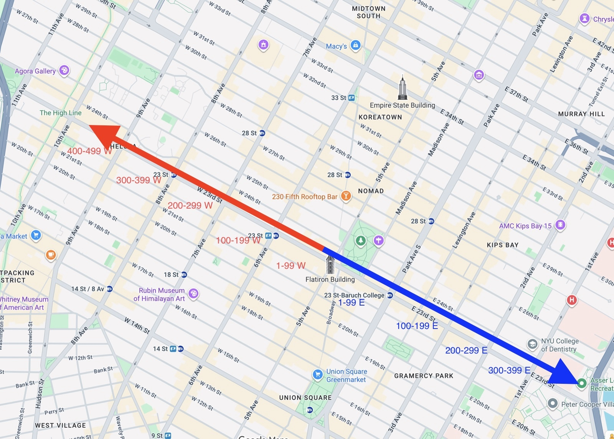
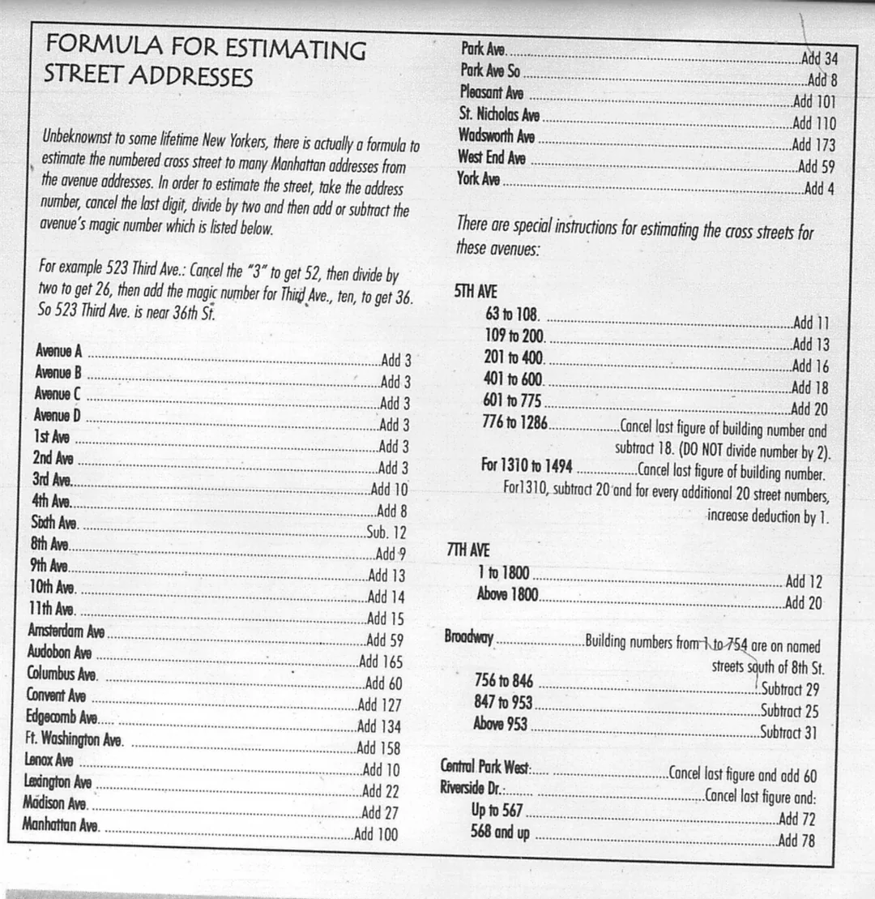

1 E 22nd street
22nd st between 5th ave and Park ave
| Streets | Avenues | |
|---|---|---|
| Direction | east / west | north / south |
| Count | ~200 | ~20 |
| Numbers increase | south → north | east → west |
| Finding an address | straightforward | needs a formula and a "magic number" |
On numbered streets, building numbers start near Fifth Avenue and increase as you move away from Fifth, in both directions. Let's take 22nd street as an example:

| Avenue Block | Building Number Range |
|---|---|
| 5th → 6th Avenue | 1–99 W |
| 6th → 7th Avenue | 100–199 W |
| 7th → 8th Avenue | 200–299 W |
| 8th → 9th Avenue | 300–399 W |
| 9th → 10th Avenue | 400–499 W |
| Avenue Block | Building Number Range |
|---|---|
| 5th → Park Ave (used to be called 4th ave) | 1–99 |
| Park Ave (used to be called 4th ave) → 3rd Ave | 100–199 |
| 3rd → 2nd Ave | 200–299 |
| 2nd → 1st Ave | 300–399 |
Examples
22nd st between 5th ave and Park ave
22nd st between 5th ave and 6th ave
22nd st between Park ave and 3rd ave
22nd st between 8th and 9th
Avenue addresses are not simple — you need a bit of math and a "magic number" to find where an address sits. The formula:
Which gives you an estimate of the nearest cross street. For example, 523 Third Ave:
So 523 Third Ave is close to 36th St.

Examples
5th Ave's magic number depends on the range. For 201–400 it's +16.
So 350 Fifth Ave is close to 33rd st. This is the address of the Empire State Building, which is between 33rd and 34th sts.
Lexington Avenue's magic number is +22.
So 405 Lexington Ave is close to 42nd st. This is the address of the Chrysler Building, on the corner of 42nd and Lexington.
6th Avenue is one of the few avenues that subtracts instead of adds. Its magic number is −12.
So 1271 Sixth Ave is close to 51st st. This is the address of the Time & Life Building (now News Corp), between 50th and 51st sts.
Park Avenue's magic number is +34.
So 740 Park Ave is close to 71st st. This is one of New York's most famous luxury co-ops, on the corner of 71st and Park.
Try it
Use the old-school Manhattan shortcut. The result gets you close enough to sound like you know where you are going.
In 43-12 47th Avenue, the 43 means near 43rd Street — not building 43. Queens packs three pieces into a hyphenated address: the nearest cross street, the house number, and the street the building actually sits on.
They generally increase as you move east. If extra roads are squeezed in, the order is Street, then Place, then Lane.
They generally increase as you move south. If extra roads are squeezed in, the order is Avenue, Road, Drive, then Terrace.
The number after the hyphen often starts near 01 on a new block. Odd numbers are usually on one side, even numbers on the other.
Examples
On 15th Avenue, between 21st and 22nd Streets. The house number on that block is 23.
On 156th Street, between 15th and 16th Avenues. Same house number, different street family.
Could be around the corner from 15-23 156th Street because the fields swap roles.
This is not close to 15-23 156th Street. Same first two fields, totally different Avenue.
Try it
Put in a hyphenated Queens address and the decoder will label the pieces like a tour guide would.
Test the hyphen, the Queens street families, and which boro reigns.